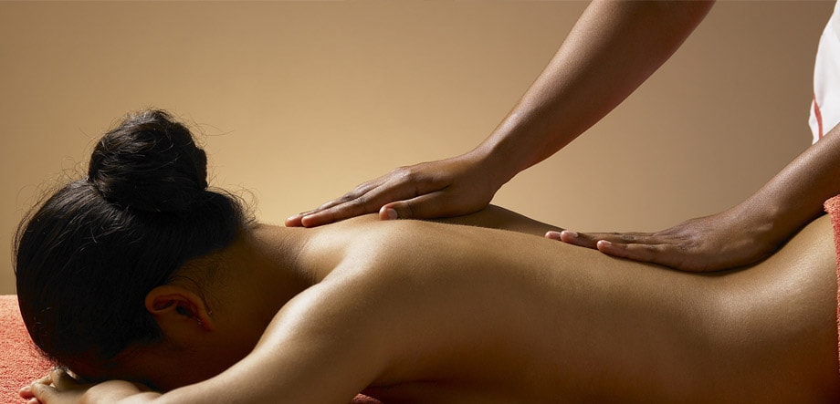

Правила эротического массажа
 Эротический массажХотите порадовать свою половинку возбуждающим эротическим массажем? Тогда вам необходимо учитывать основные правила эротического массажа, которые помогут вам сделать процедуру незабываемой и приятной для партнера. Что это за правила? Читайте дальше.
Список правил эромассажа
- Создайте романтическую обстановку: задерните шторы, зажгите свечи, включите легкую музыку, например, классику или джаз.
- В помещении, где будет проведен эротический массаж, не должно быть холодно. Идеальная температура – 24-27 градусов.
- Ничто не должно отвлекать вас и вашего партнера от процесса, а потому выключите мобильные телефоны.
- Позаботьтесь о ложе, на котором будет проведен массаж. Если матрас на вашей кровати достаточно жесткий, выполняйте процедуру здесь, предварительно застелив его шелковым или приятным к телу бельем. Можете кинуть на пол мягкое одеяло или плед и разместиться с партнером прямо на нем.
- Чтобы ваши руки плавно скользили по телу любимого человека, следует использовать крем либо массажное масло. Добавьте в него несколько капель эфирного масла. Способствовать возбуждению будут ароматы апельсина, пачули, иланг-иланга, корицы, жасмина или бергамота. Отдавайте предпочтение маслам с мягким, а не резким запахом.
- Перед тем, как наносить массажное масло или крем на кожу партнера, разогрейте его между своих ладоней или согрейте в емкости, опустив ее в теплую воду.
- Следите за тем, чтобы ваши руки были теплыми перед тем, как прикоснуться к телу массажируемого. Перед процедурой разогрейте их, опустив в теплую воду, а также разомните следующим упражнением: сожмите руки в кулаки и повращайте ими за и против часовой стрелки.
- Не выполняйте массаж в плохом настроении – оно непременно передастся партнеру. Также через прикосновения можно передать свои мысли и энергию. Посылая любимому человеку негатив, вы превратите удовольствие от массажа в настоящую пытку.
- Настройте партнера на романтический лад и помогите ему расслабиться перед сеансом массажа. Легче всего это сделать, предложив ему принять вместе теплый душ или горячую ванну. Помогите друг другу помыться – это позволит вам сблизиться и обрести взаимное доверие. Горячая вода разогреет тело и заставит кровь быстрее бегать по венам.
- Во время массажа не обсуждайте с партнером бытовые проблемы. Лучше помалкивайте, чтобы не сбить романтический настрой партнера.
- Перед массажем завяжите любимому человеку глаза. Это позволит усилить его ощущения и увеличить тактильное восприятие.
- Старайтесь, чтобы во время массажа ваши руки постоянно находились на теле партнера. Во время выполнения движений пытайтесь не отрывать ладони и не делать длительных пауз, чтобы возбуждение массажируемого не сошло на нет.
- Начинать массаж рекомендуется с плавных и нежных поглаживаний, в которые стоит закладывать всю свою любовь и чувства к партнеру. После того, как его тело будет разогрето, а сам он полностью расслабится – переходите к более интенсивным движениям: надавливаниям, растираниям и разминаниям.
- Первым делом следует массажировать руки и ноги, что позволит человеку избавиться от напряжения и накопившейся усталости. Кроме того эти части тела содержат большое количество чувствительных точек. Особенно их много на ладонях и ступнях.
- Каждый прием массажа (поглаживание, надавливание, растирание, разминание и т.д.) должен длиться не более пяти минут, чтобы не утомить партнера. Заканчивать массаж рекомендуется аккуратными поглаживания тела внутренней стороной ладоней и легкими надавливания кончиками пальцев.
И самое главное правило: в эротическом массаже не существует жестких рамок и правил, которые должны быть выполнены обязательно. Существуют лишь подсказки и советы, применяя которые вы сможете возвести удовольствие вашего любимого человека на новый уровень. В остальном – положитесь на себя и свои ощущения. Используйте те способы, которые на ваш взгляд, принесут удовольствие вам и вашему партнеру.